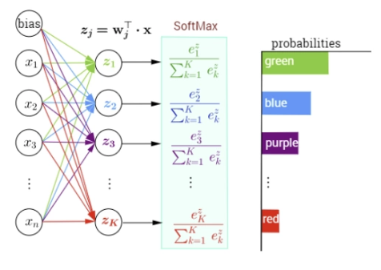

本文从信息论和最大似然估计得角度推导交叉熵作为分类损失函数的依据。
信息量来衡量一个事件的不确定性，一个事件发生的概率越大，不确定性越小，则其携带的信息量就越小。
设\(X\)是一个离散型随机变量，其取值为集合\(X = {x_0,x_1,\dots,x_n}\) ，则其概率分布函数为\(p(x) = Pr(X = x),x \in X\)，则定义事件\(X = x_0\) 的信息量为：
\[
I(x_0) = -\log(p(x_0))
\]
当\(p(x_0) = 1\)时，该事件必定发生，其信息量为0.
熵用来衡量一个系统的混乱程度，代表系统中信息量的总和；熵值越大，表明这个系统的不确定性就越大。
信息量是衡量某个事件的不确定性，而熵是衡量一个系统（所有事件）的不确定性。
熵的计算公式
\[
H(x) = -\sum_{i=1}^np(x_i)\log(p(x_i))
\]
其中，\(p(x_i)\)为事件\(X=x_i\)的概率，\(-log(p(x_i))\)为事件\(X=x_i\)的信息量。
可以看出，熵是信息量的期望值，是一个随机变量（一个系统，事件所有可能性）不确定性的度量。熵值越大，随机变量的取值就越难确定，系统也就越不稳定；熵值越小，随机变量的取值也就越容易确定，系统越稳定。
相对熵也称为KL散度(Kullback-Leibler divergence)，表示同一个随机变量的两个不同分布间的距离。
设 \(p(x),q(x)\) 分别是 离散随机变量\(X\)的两个概率分布，则\(p\)对\(q\)的相对熵是：
\[
D_{KL}(p \parallel q) = \sum_i p(x_i) log(\frac{p(x_i)}{q(x_i)})
\]
相对熵具有以下性质：
总的来说，相对熵是用来衡量同一个随机变量的两个不同分布之间的距离。在实际应用中，假如\(p(x)\)是目标真实的分布，而\(q(x)\)是预测得来的分布，为了让这两个分布尽可能的相同的，就需要最小化KL散度。
设 \(p(x),q(x)\) 分别是 离散随机变量\(X\)的两个概率分布，其中\(p(x)\)是目标分布，\(p\)和\(q\)的交叉熵可以看做是，使用分布\(q(x)\) 表示目标分布\(p(x)\)的困难程度：
\[
H(p,q) = \sum_ip(x_i)log\frac{1}{\log q(x_i)} = -\sum_ip(x_i)\log q(x_i)
\]
将熵、相对熵以及交叉熵的公式放到一起，
\[
\begin{align}
H(p) &= -\sum_{i}p(x_i) \log p(x_i) \\
D_{KL}(p \parallel q) &= \sum_{i}p(x_i)\log \frac{p(x_i)}{q(x_i)} = \sum_i (p(x_i)\log p(x_i) - p(x_i) \log q(x_i)) \\
H(p,q) &= -\sum_ip(x_i)\log q(x_i)
\end{align}
\]
通过上面三个公式就可以得到
\[
D_{KL}(p,q) = H(p,q)- H(p)
\]
在机器学习中，目标的分布\(p(x)\) 通常是训练数据的分布是固定，即是\(H(p)\) 是一个常量。这样两个分布的交叉熵\(H(p,q)\) 也就等价于最小化这两个分布的相对熵\(D_{KL}(p \parallel q)\)。
设\(p(x)\) 是目标分布（训练数据的分布），我们的目标的就让训练得到的分布\(q(x)\)尽可能的接近\(p(x)\)，这时候就可以最小化\(D_{KL}(p \parallel q)\)，等价于最小化交叉熵\(H(p,q)\) 。
设有一组训练样本\(X= \{x_1,x_2,\cdots,x_m\}\) ,该样本的分布为\(p(x)\) 。假设使用\(\theta\) 参数化模型得到\(q(x;\theta)\) ，现用这个模型来估计\(X\) 的概率分布，得到似然函数
\[
L(\theta) = q(X; \theta) = \prod_i^mq(x_i;\theta)
\]
最大似然估计就是求得\(\theta\) 使得\(L(\theta)\) 的值最大，也就是
\[
\theta_{ML} = arg \max_{\theta} \prod_i^mq(x_i;\theta)
\]
对上式的两边同时取\(\log\) ，等价优化\(\log\) 的最大似然估计即log-likelyhood ，最大对数似然估计
\[
\theta_{ML} = arg \max_\theta \sum_i^m \log q(x_i;\theta)
\]
对上式的右边进行缩放并不会改变\(arg \max\) 的解，上式的右边除以样本的个数\(m\)
\[
\theta_{ML} = arg \max_\theta \frac{1}{m}\sum_i^m\log q(x_i;\theta)
\]
上式的最大化\(\theta_{ML}\) 是和没有训练样本没有关联的，就需要某种变换使其可以用训练的样本分布来表示，因为训练样本的分布可以看作是已知的，也是对最大化似然的一个约束条件。
注意上式的
\[
\frac{1}{m}\sum_i^m\log q(x_i;\theta)
\]
相当于求随机变量\(X\) 的函数\(\log (X;\theta)\) 的均值 ，根据大数定理，随着样本容量的增加，样本的算术平均值将趋近于随机变量的期望。 也就是说
\[
\frac{1}{m}\sum_i^m \log q(x_i;\theta) \rightarrow E_{x\sim P}(\log q(x;\theta))
\]
其中\(E_{X\sim P}\) 表示符合样本分布\(P\) 的期望，这样就将最大似然估计使用真实样本的期望来表示
\[
\begin{aligned}
\theta_{ML} &= arg \max_{\theta} E_{x\sim P}({\log q(x;\theta)}) \\
&= arg \min_{\theta} E_{x \sim P}(- \log q(x;\theta))
\end{aligned}
\]
对右边取负号，将最大化变成最小化运算。
上述的推导过程，可以参考 《Deep Learning》 的第五章。 但是，在书中变为期望的只有一句话，将式子的右边除以样本数量\(m\) 进行缩放，从而可以将其变为\(E_{x \sim p}\log q(x;\theta)\)，没有细节过程，也可能是作者默认上面的变换对读者是一直。 确实是理解不了，查了很多文章，都是对这个变换的细节含糊其辞。一个周，对这个点一直耿耿于怀，就看了些关于概率论的科普书籍，其中共有介绍大数定理的：当样本容量趋于无穷时，样本的均值趋于其期望。
针对上面公式，除以\(m\)后，\(\frac{1}{m}\sum_i^m\log q(x_i;\theta)\) ，确实是关于随机变量函数\(\log q(x)\) 的算术平均值，而\(x\) 是训练样本其分布是已知的\(p(x)\) ，这样就得到了\(E_{x \sim p}(\log q(x))\) 。
\[ \begin{aligned} D_{KL}(p \parallel q) &= \sum_i p(x_i) log(\frac{p(x_i)}{q(x_i)})\\ &= E_{x\sim p}(\log \frac{p(x)}{q(x)}) \\ &= E_{x \sim p}(\log p(x) - \log q(x)) \\ &= E_{x \sim p}(\log p(x)) - E_{x \sim p} (\log q(x)) \end{aligned} \]
由于\(E_{x \sim p} (\log p(x))\) 是训练样本的期望，是个固定的常数，在求最小值时可以忽略，所以最小化\(D_{KL}(p \parallel q)\) 就变成了最小化\(-E_{x\sim p}(\log q(x))\) ，这和最大似然估计是等价的。
最大似然估计、相对熵、交叉熵的公式如下
\[
\begin{aligned}\theta_{ML} &= -arg \min_\theta E_{x\sim p}\log q(x;\theta) \\D_{KL} &= E_{x \sim p}\log p(x) - E_{x \sim p} \log q(x) \\H(p,q) &= -\sum_i^m p(x_i) \log q(x_i) = -E_{x \sim p} \log q(x)\end{aligned}\begin{aligned}\theta_{ML} &= arg \min_\theta E_{x\sim p}\log q(x;\theta) \\D_{KL} &= E_{x \sim p}\log p(x) - E_{x \sim p} \log q(x) \\H(p,q) &= -\sum_i^m p(x_i) \log q(x_i) = -E_{x \sim p} \log q(x)\end{aligned}
\]
从上面可以看出，最小化交叉熵，也就是最小化\(D_{KL}\) ，从而预测的分布\(q(x)\) 和训练样本的真实分布\(p(x)\) 最接近。而最小化\(D_{KL}\) 和最大似然估计是等价的。
多分类任务中输出的是目标属于每个类别的概率，所有类别概率的和为1，其中概率最大的类别就是目标所属的分类。 而softmax 函数能将一个向量的每个分量映射到\([0,1]\) 区间，并且对整个向量的输出做了归一化，保证所有分量输出的和为1，正好满足多分类任务的输出要求。所以，在多分类中，在最后就需要将提取的到特征经过softmax函数的，输出为每个类别的概率，然后再使用交叉熵 作为损失函数。
softmax函数定义如下：
\[
S_i = \frac{e^{z_i}}{\sum^n_{i=1}e^{z_i}}
\]
其中，输入的向量为\(z_i(i = 1,2,\dots,n)\) 。
更直观的参见下图

通过前面的特征提取到的特征向量为\((z_1,z_2,\dots,z_k)\) ，将向量输入到softmax函数中，即可得到目标属于每个类别的概率，概率最大的就是预测得到的目标的类别。
使用softmax函数可以将特征向量映射为所属类别的概率，可以看作是预测类别的概率分布\(q(c_i)\) ，有
\[
q(c_i) = \frac{e^{z_i}}{\sum^n_{i=1}e^{z_i}}
\]
其中\(c_i\) 为某个类别。
设训练数据中类别的概率分布为\(p(c_i)\) ，那么目标分布\(p(c_i)\) 和预测分布\(q(c_i)\)的交叉熵为
\[
H(p,q) =-\sum_ip(c_i)\log q(c_i)
\]
每个训练样本所属的类别是已知的，并且每个样本只会属于一个类别（概率为1），属于其他类别概率为0。具体的，可以假设有个三分类任务，三个类分别是：猫，猪，狗。现有一个训练样本类别为猫，则有：
\[
\begin{align}
p(cat) & = 1 \\
p(pig) &= 0 \\
p(dog) & = 0
\end{align}
\]
通过预测得到的三个类别的概率分别为：\(q(cat) = 0.6,q(pig) = 0.2,q(dog) = 0.2\) ，计算\(p\) 和\(q\) 的交叉熵为：
\[
\begin{aligned}
H(p,q) &= -(p(cat) \log q(cat) + p(pig) + \log q(pig) + \log q(dog)) \\
&= - (1 \cdot \log 0.6 + 0 \cdot \log 0.2 +0 \cdot \log 0.2) \\
&= - \log 0.6 \\
&= - \log q(cat)
\end{aligned}
\]
利用这种特性，可以将样本的类别进行重新编码，就可以简化交叉熵的计算，这种编码方式就是one-hot 编码。以上面例子为例，
\[
\begin{aligned}
\text{cat} &= (1 0 0) \\
\text{pig} &= (010) \\
\text{dog} &= (001)
\end{aligned}
\]
通过这种编码方式，在计算交叉熵时，只需要计算和训练样本对应类别预测概率的值，其他的项都是\(0 \cdot \log q(c_i) = 0\) 。
具体的，交叉熵计算公式变成如下：
\[
\text{Cross_Entropy}(p,q) = - \log q(c_i)
\]
其中\(c_i\) 为训练样本对应的类别，上式也被称为负对数似然（negative log-likelihood,nll）。
PyTorch中实现交叉熵损失的有三个函数torch.nn.CrossEntropyLoss，torch.nn.LogSoftmax以及torch.nn.NLLLoss。
torch.nn.functional.log_softmax 比较简单，输入为\(n\)维向量，指定要计算的维度dim，输出为\(log(Softmax(x))\)。其计算公式如下：\[ \text{LogSoftmax}(x_i) = \log (\frac{\exp(x_i)}{\sum_j \exp(x_j)}) \]
没有额外的处理，就是对输入的\(n\)维向量的每个元素进行上述运算。
torch.nn.functional.nll_loss 负对数似然损失（Negative Log Likelihood Loss)，用于多分类，其输入的通常是torch.nn.functional.log_softmax的输出值。其函数如下torch.nn.functional.nll_loss(input, target, weight=None, size_average=None, ignore_index=-100, reduce=None, reduction='mean')input 也就是log_softmax的输出值，各个类别的对数概率。target 目标正确类别,weight 针对类别不平衡问题，可以为类别设置不同的权值；ignore_index 要忽略的类别，不参与loss的计算；比较重要的是reduction 的值，有三个取值：none 不做处理，输出的结果为向量；mean 将none结果求均值后输出；sum 将none 结果求和后输出。
torch.nn.CrossEntropyLoss就是上面两个函数的组合nll_loss(log_softmax(input))。多分类中使用softmax函数将最后的输出映射为每个类别的概率，而在二分类中则通常使用sigmoid 将输出映射为正样本的概率。这是因为二分类中，只有两个类别：{正样本，负样本}，只需要求得正样本的概率\(q\),则\(1-q\) 就是负样本的概率。这也是多分类和二分类不同的地方。
\(\text{sigmoid}\) 函数的表达式如下：
\[
\sigma(z) = \frac{1}{1 + e^{-z}}
\]
sigmoid的输入为\(z\) ，其输出为\((0,1)\) ，可以表示分类为正样本的概率。
二分类的交叉熵可以看作是交叉熵损失的一个特列，交叉熵为
\[
\text{Cross_Entropy}(p,q) = -\sum_i^m p(x_i) \log q(x_i)
\]
这里只有两个类别\(x \in {x_1,x_2}\) ，则有
\[
\begin{aligned}
\text{Cross_Entropy}(p,q) &= -(p(x_1) \log q(x_1) + p(x_2) \log q(x_2))
\end{aligned}
\]
因为只有两个选择，则有\(p(x_1) + p(x_2) = 1,q(x_1) + q(x_2) = 1\) 。设，训练样本中\(x_1\)的概率为\(p\)，则\(x_2\)为\(1-p\); 预测的\(x_1\)的概率为\(q\)，则\(x_2\)的预测概率为\(1 - q\) 。则上式可改写为
\[
\text{Cross_Entropy}(p,q) = -(p \log q + (1-p) \log (1-q))
\]
也就是二分类交叉熵的损失函数。
相对熵可以用来度量两个分布相似性，假设分布\(p\)是训练样本的分布，\(q\)是预测得到的分布。分类训练的过程实际上就是最小化\(D_{KL}(p \parallel q)\)，由于由于交叉熵
\[H(p,q)= D_{KL}(p \parallel q) + H(p)\]
其中,\(H(p)\)是训练样本的熵，是一个已知的常量，这样最小化相对熵就等价于最小化交叉熵。
从最大似然估计转化为最小化负对数似然
\[
\theta_{ML} = -arg \min_\theta E_{x\sim p}\log q(x;\theta)
\]
也等价于最小化相对熵。